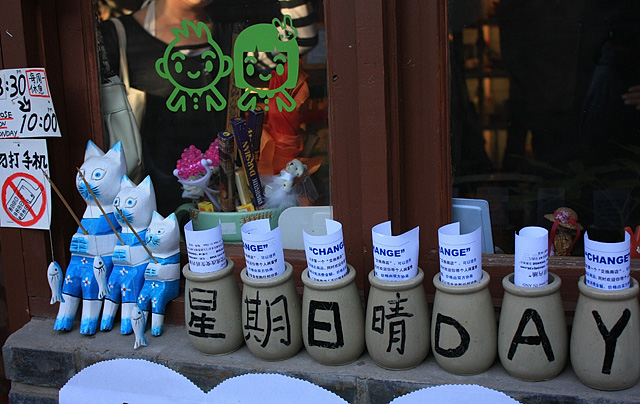

我上班在五道口，住的地方在北三环和北二环之间，这里最近有个地方越来越火了，叫五道营。 五道营主要也是北京胡同，在二环里面，挨着雍和宫和国子监，和南锣鼓巷也差不多，都是些酒吧和特色小店。现在后海和南锣鼓巷客流已经很多，相对来说五道营还刚在起步，显得安静不少，许多人慢慢也都注意到了这。目前许多店铺还在装修，还没有形成一片商区，还有些未出租的，可惜没钱，不然也去占个地多好。最近看的彭浩翔监制的网络电影《指甲刀人魔》，当中男主角走进的一家小店给周迅买礼物，就是下面这家以物换物的小店，说是北京第一家。而厦门鼓浪屿似乎已经有很多这样的店了。反正大家有空可以去五道营看看，赶个早。以后说不定又是一个南锣鼓巷了。
